Ceci est votre guide complet pour débutants sur la façon de construire réellement un agent de trading en utilisant GrokBot. Et écoutez, que vous fassiez du trading de crypto comme moi, du Forex, des actions, des contrats à terme, peu importe le marché qui vous intéresse, ce système exact fonctionne de la même manière pour tous. Alors voici le problème, peu importe à quelle heure je me réveille, peu importe le nombre d'onglets que j'ai ouverts, je rate toujours des mouvements. Au moment où je repère enfin quelque chose, ça a déjà bougé de 5 à 10 %. Et écoutez, j'ai trouvé quelque chose qui résout vraiment ce problème.
Interface & Outils : TradingView, application de chatbot GrokBot
Contenu textuel & Code : Paires de devises Forex (EURUSD, GBPUSD, USDJPY, etc.), prompt détaillé pour configurer un assistant automatisé de brief matinal crypto, et graphique des prix BTC/USDT.
Action / Démonstration : Navigation et sélection de symboles de marché, puis configuration d'un agent de trading automatisé.
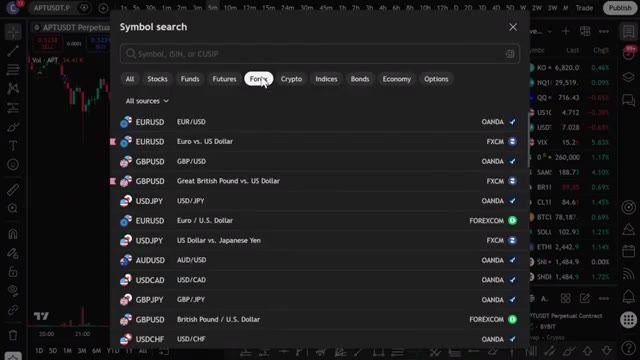
🔍 Agrandir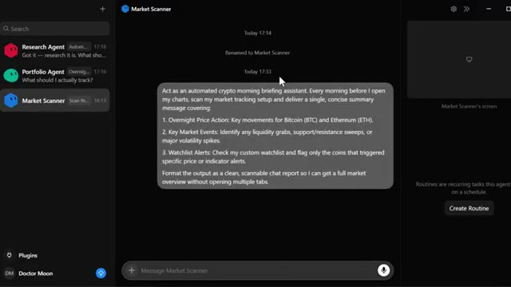
🔍 Agrandir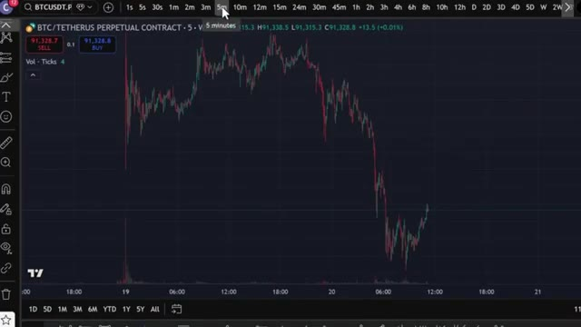
🔍 AgrandirCe n’est pas un autre indicateur. Ce n’est pas un autre groupe de signaux. C’est une IA qui travaille littéralement pour vous 24h/24 et 7j/7, même pendant que vous dormez. Donc, dans la vidéo d’aujourd’hui, je vous donne la présentation complète. Premièrement, ce que Grok et GrokBot sont réellement et d'où ils viennent. Deuxièmement, comment l'installer étape par étape. Exactement de la même manière que je vous guide à travers les choses sur ma chaîne.
Interface & Outils : Interface web et application logicielle de Grok Bot.
Contenu textuel & Code : Présentation marketing de Grok Bot, description des agents IA autonomes et boutons de téléchargement ou de connexion.
Action / Démonstration : Présentation de l'interface de présentation et de connexion de Grok Bot.
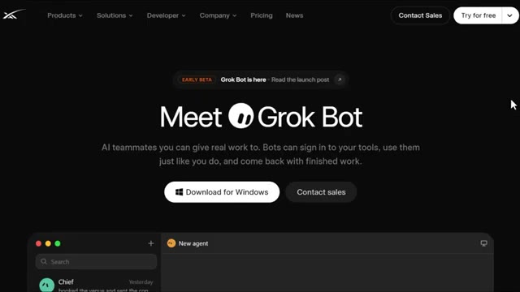
🔍 Agrandir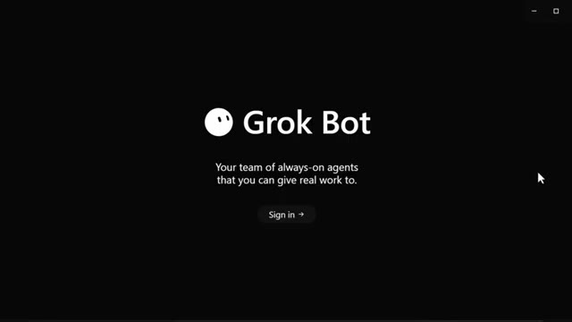
🔍 AgrandirTroisièmement, comment il se compare à tous les modèles d'IA que vous payez probablement déjà en ce moment et la vraie différence de prix. et quatrièmement les trois cas d'usage que je configurerais personnellement aujourd'hui si je faisais tourner ça pour mon propre trading de crypto dans mon groupe telegram à la fin de cette vidéo vous allez comprendre pourquoi je pense sincèrement que c'est l'un des meilleurs outils sortis cette année parce qu'il supprime pratiquement toute la friction qui empêchait les traders réguliers des gens comme vous et moi de faire tourner notre propre système toujours actif vous n'avez pas besoin d'être un développeur vous n'avez pas besoin de connaître un seul
Interface & Outils : Application de messagerie/agent IA (Market Scanner), réseau social X (Twitter), terminal Linux (GNU nano).
Contenu textuel & Code : Prompts d'analyse technique automatisée (détection d'anomalies de volume, ruptures de structure de marché) et analyse de prix de logiciels d'IA.
Action / Démonstration : Navigation et affichage des messages d'un agent de trading et lecture d'un tweet d'évaluation comparative de l'IA.
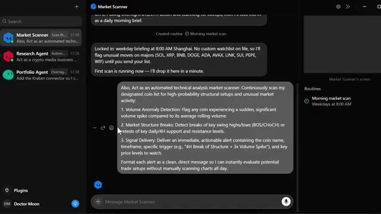
🔍 Agrandir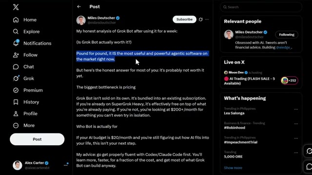
🔍 Agrandirligne de code. Suivez simplement avec moi étape par étape. Donc sans plus attendre, entrons dans le vif du sujet. Maintenant, avant d'aborder le bot lui-même, parlons de d'où tout cela vient. Parce que beaucoup d'entre vous connaissent le nom de Grok, mais ne connaissent pas vraiment l'histoire. Grok a été créé par XAI, qu'Elon Musk a lancé en 2023 avec essentiellement un seul objectif, construire une IA capable de rivaliser avec OpenAI et de réellement comprendre le monde, et pas seulement de répondre à des questions. La première version, Grok1, est sortie en novembre 2023 et a été intégrée directement dans X. Donc si vous aviez X Premium, vous l'aviez déjà
Interface & Outils : Application de chat/agent IA et page web d'actualités/documentation technique (xAI).
Contenu textuel & Code : Prompt de Market Scanner pour l'analyse technique automatisée et texte descriptif des performances du modèle Grok-1 (HumanEval, MMLU, GSM8k).
Action / Démonstration : Navigation et présentation des origines de Grok et de sa configuration d'agent de scan de marché.
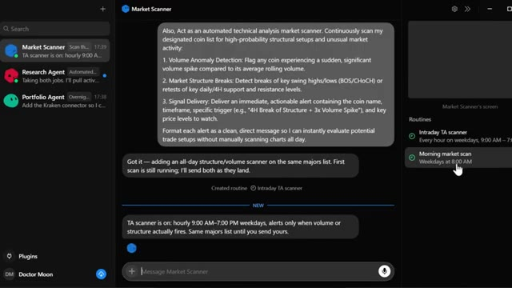
🔍 Agrandir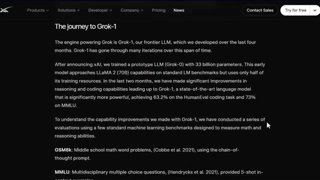
🔍 Agrandiraccès à celui-ci sans même réaliser ce que vous utilisiez. À partir de là, tout est allé très vite. Grok 2, puis Grok 3, puis Grok 4, chacun réduisant l'écart avec GPT et Claude. Et honnêtement, dès Grok 3, les gens ont arrêté de l'appeler l'IA de Twitter et ont commencé à le prendre au sérieux en tant que véritable modèle de pointe. Et maintenant, plus récemment, ils ont lancé Grok 4.6, dont je parlerai plus en détail plus tard, car cela compte vraiment pour la tarification.
Interface & Outils : Site web officiel de xAI (section News et benchmarks).
Contenu textuel & Code : Annonce officielle "Grok 3 Beta — The Age of Reasoning Agents" et graphiques de performance comparative face aux modèles concurrents (DeepSeek, OpenAI o1, Gemini).
Action / Démonstration : Présentation des capacités et des scores de raisonnement des nouveaux modèles xAI.
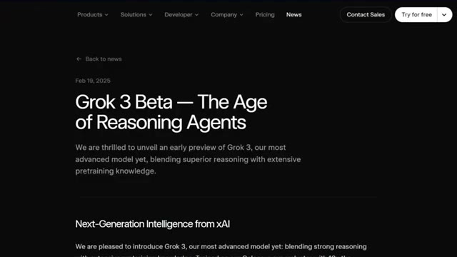
🔍 Agrandir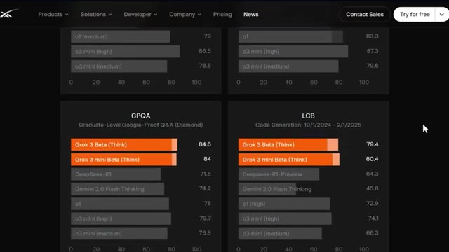
🔍 AgrandirMais voici la partie que la plupart des gens ratent. Grok a cessé d'être juste un chatbot il y a un moment. xAI a pris ce même modèle et a construit un cadre d'agents autour. C'est de ça qu'on est vraiment là pour parler aujourd'hui. Donc c'est Grokbot, et honnêtement, l'appeler juste un outil d'IA ne lui rend même pas justice. C'est fondamentalement une équipe complète d'agents qui ne pointent jamais, n'ont jamais besoin de rappels, et continuent simplement de bosser en arrière-plan 24h/24 et 7j/7.
Interface & Outils : Interface Web de X (Twitter) et plateforme xAI Grok Bot.
Contenu textuel & Code : Menus de navigation Grok, bannières 'Meet Grok Bot', agents d'IA conversationnels (Chief, Sales Outbound, Talent Scout, Expense Manager, etc.), historiques de tâches automatisées et flux de discussion.
Action / Démonstration : Navigation à travers l'interface de présentation de Grok Bot et visualisation des différents agents autonomes et de leurs rapports d'activité.
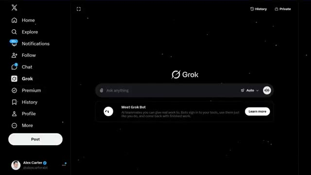
🔍 Agrandir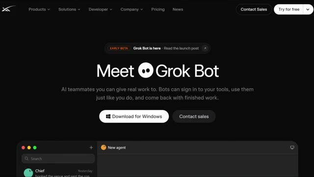
🔍 Agrandir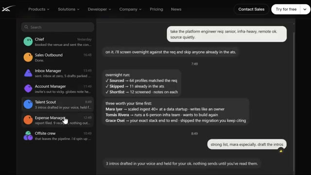
🔍 AgrandirTu n'as pas besoin d'un VPS qui tourne 24 heures sur 24. Tu n'as pas besoin de configurer des fichiers mémoire pendant des heures. Tu le télécharges, tu te connectes à un compte, et tu as déjà une équipe d'agents prêts à travailler. Si tu t'es déjà senti dépassé en essayant de configurer un système d'IA toujours actif pour ton trading, tu n'es pas seul. Et ce n'est pas ta faute.
Interface & Outils : GNU nano, terminal de commande SSH, éditeur de configuration système.
Contenu textuel & Code : Fichier de configuration '/etc/ssh/sshd_config' ouvert dans nano avec des paramètres SSH tels que PermitRootLogin et PermitTTY.
Action / Démonstration : Modification des configurations serveur et édition de scripts de configuration système via un terminal SSH.
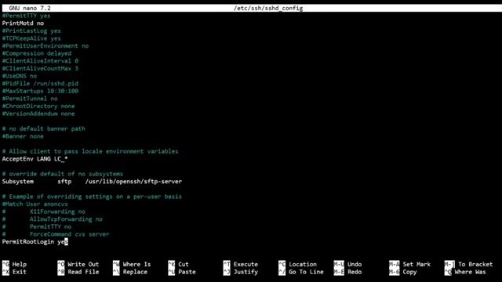
🔍 AgrandirLa plupart de ces outils ont bien trop de friction. Il peut se connecter à pratiquement n'importe quel modèle, Grok, Opus, GPT, Gemini, peu importe ce que vous voulez faire tourner en arrière-plan. Et comme il possède son propre ordinateur, il peut consulter des graphiques, extraire des données, exécuter des scripts et continuer à travailler pendant que vous dormez littéralement ou que vous regardez une autre vidéo sur cette chaîne.
Interface & Outils : Documentation technique, marketplace de plugins, interface TradingView.
Contenu textuel & Code : Commandes de contrôle de graphiques, listes de plugins d'intégration financière, métriques de performance de stratégie de trading.
Action / Démonstration : Présentation des outils d'intégration de modèles et de contrôle automatisé de graphiques.
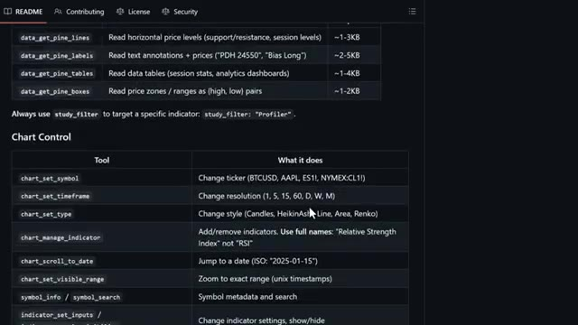
🔍 Agrandir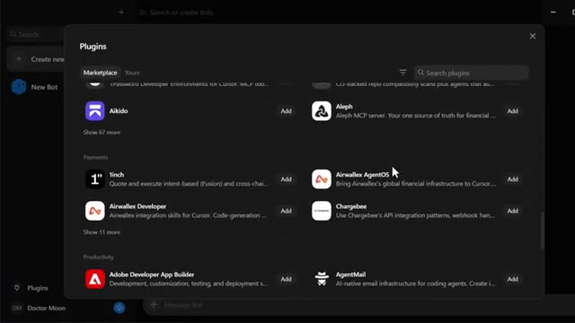
🔍 Agrandir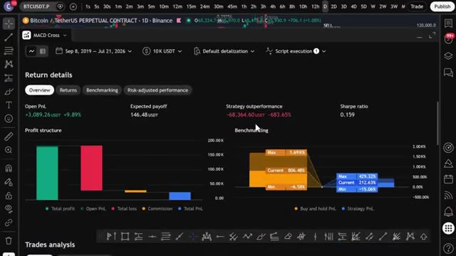
🔍 AgrandirMaintenant, la plupart d'entre vous paient déjà pour ChatGPT, Gemini ou Claude. Soyons donc réalistes sur la raison pour laquelle c'est différent. ChatGPT est probablement encore le meilleur assistant conversationnel généraliste sur le marché. Idéal pour les questions rapides, pour expliquer une configuration, pour rédiger quelque chose rapidement. Mais dès que vous voulez qu'il vérifie les prix pendant la nuit, qu'il analyse votre liste de surveillance pendant que vous dormez, il craque.
Interface & Outils : Interfaces web de Claude (Anthropic) et de ChatGPT (OpenAI).
Contenu textuel & Code : Texte conversationnel, options de prompts (Write, Learn, Code), actualités OpenAI et prévisions de prix de marché structurées par points.
Action / Démonstration : Navigation et présentation des interfaces des principaux assistants conversationnels du marché (ChatGPT et Claude).
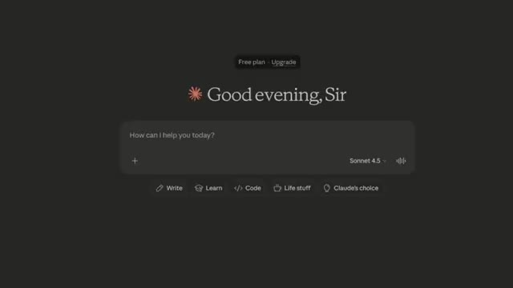
🔍 Agrandir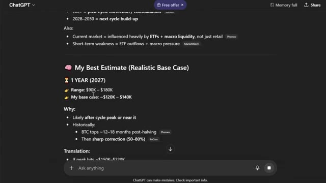
🔍 AgrandirBecause it's not an agent, it's a conversation. It answers when you ask. It doesn't work when you don't. Gemini actually holds up really well for search grounded stuff. Pulling in live data, cross-referencing news. But same problem. No persistent computer. No memory that carries a task forward on its own. The second you close the tab, the work stops.
Interface & Outils : Interfaces Web de ChatGPT et Google Gemini.
Contenu textuel & Code : Prévisions de prix du Bitcoin, analyses de cycles de marché et estimations macroéconomiques générées par les IA.
Action / Démonstration : Comparaison des réponses et des estimations de prix fournies par ChatGPT et Gemini concernant les tendances futures du Bitcoin.
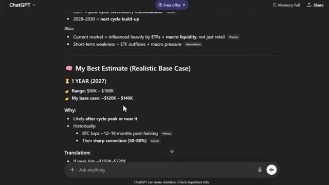
🔍 Agrandir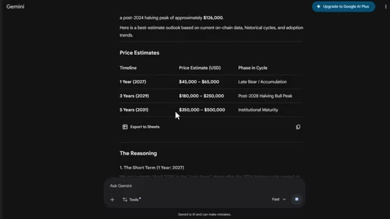
🔍 AgrandirClaude, et plus particulièrement Opus, est généralement le modèle de raisonnement le plus puissant des trois, selon moi. Et voici le point important : GrokBot peut en fait faire tourner Opus en arrière-plan. Ce n'est donc pas vraiment GrokBot contre Claude. C'est l'intelligence de Claude, en moins les jours de configuration manuelle qu'il faut normalement pour connecter soi-même l'utilisation de l'ordinateur, les fichiers de mémoire et les connexions MCP.
Interface & Outils : Navigateur web affichant une interface X (Twitter) et terminal Linux SSH.
Contenu textuel & Code : Publication X indiquant 'Grok Bot (@bot) currently uses Claude Opus internally' et logs montrant des appels vers 'claude-opus-0.19.0', ainsi que des commandes root dans le terminal.
Action / Démonstration : Navigation sur les réseaux sociaux pour analyser le fonctionnement interne d'un bot IA et administration système via terminal.
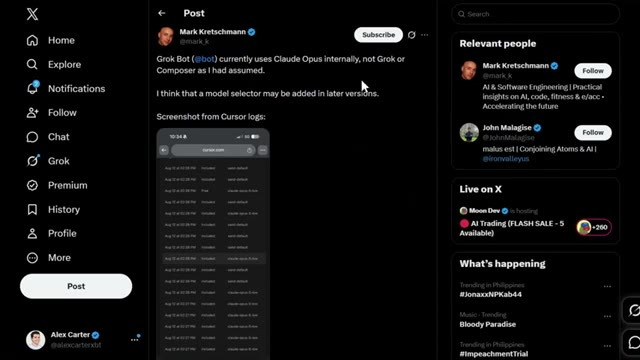
🔍 Agrandir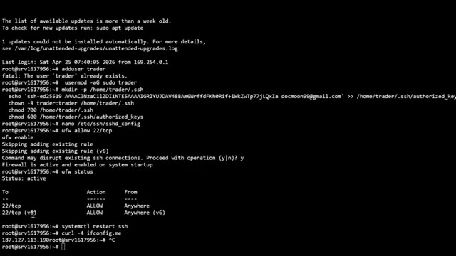
🔍 AgrandirVous pensez peut-être que votre configuration actuelle d'IA vous offre déjà une analyse solide. Pourquoi aurais-je besoin d'une structure d'agent en plus ? Mais les données montrent quelque chose de différent. Un modèle de conversation répond quand vous posez la question. Une structure d'agent comme GrokBot fonctionne que vous demandiez ou non. Et le dernier élément concerne le coût et la vitesse. L'équipe d'Elon vient de sortir Grok 4.6, qui est moins cher qu'Opus, mais qui atteint un grand nombre des mêmes capacités.
Interface & Outils : Interface web d'IA et navigateur.
Contenu textuel & Code : Texte de présentation de Grok 4.6 et listes d'agents conversationnels.
Action / Démonstration : Navigation et présentation des fonctionnalités multi-agents.
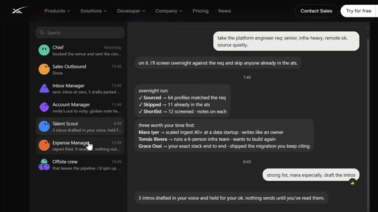
🔍 Agrandir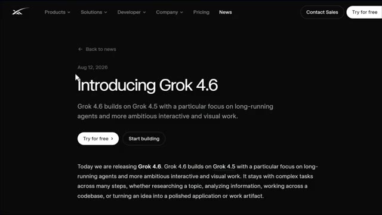
🔍 AgrandirDonc, vous obtenez une intelligence de niveau pionnier sans avoir à faire tourner cinq abonnements en parallèle. C'est vraiment ça, la lacune. Ce n'est pas que GrokBot est plus intelligent que ChatGPT, Gemini ou Claude dans tous les cas. C'est qu'il est toujours actif. C'est du prêt-à-l'emploi et ça ne vous pénalise pas pour le fait de n'être pas un développeur. Très bien, entrons maintenant dans le vif de la configuration, car je sais qu'un grand nombre d'entre vous apprennent le mieux en voyant les choses étape par étape, tout comme je le fais sur ma chaîne de tutoriels. Étape 1, allez sur la page d'inscription de GrokBot. Vous pouvez vérifier le lien ci-dessous dans la description. Vous serez amenés
Interface & Outils : Interface logicielle de bot et site web de présentation de Grok Bot.
Contenu textuel & Code : Marketplace de plugins, intégrations d'agents IA (AWS SageMaker, Atlan, Arize) et interface de téléchargement de l'application Grok Bot.
Action / Démonstration : Navigation dans la marketplace des plugins et présentation de la plateforme Grok Bot.
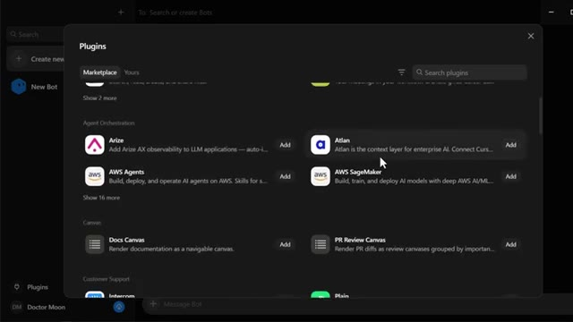
🔍 Agrandir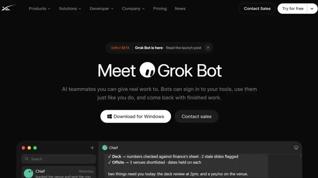
🔍 Agrandirsur cette page où vous pouvez voir que c'est en version bêta anticipée. Vous pouvez voir l'annonce de lancement ici. Quand vous faites défiler vers le bas, vous pouvez voir le bouton de téléchargement ici. Maintenant, cela dépend si vous avez un Mac ou Windows, mais pour ceci nous allons utiliser Windows. Puisque c'est ce que nous utilisons, cliquez dessus et une fenêtre de téléchargement apparaîtra. Suivez simplement l'installation sur votre appareil, attendez quelques minutes, et vous êtes prêts. Une fois que vous ouvrez l'application, une fenêtre de connexion apparaîtra, cliquez dessus, et suivez les instructions. Vous pouvez activer votre essai gratuit ici. Une fois que c'est configuré, vous retournerez sur l'application de bureau. Deuxième étape, une fois que vous arrivez sur votre
Interface & Outils : Site web officiel de Grok Bot et interface utilisateur du logiciel.
Contenu textuel & Code : Options de téléchargement pour Windows, tarifs d'abonnement (One Week Trial, Get Ultra à 200 $ par mois) et fonctionnalités incluses.
Action / Démonstration : Navigation sur le site web et survol des boutons de téléchargement et d'abonnement.
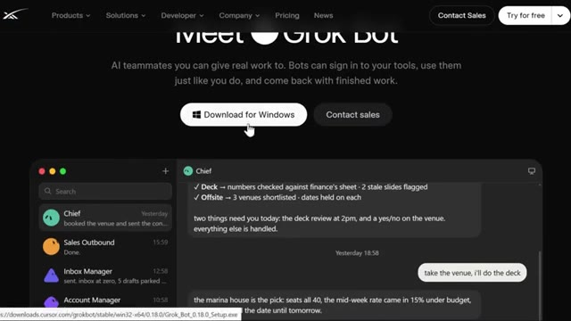
🔍 Agrandir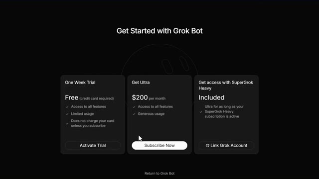
🔍 Agrandirtableau de bord, c'est votre centre de contrôle. C'est ici que vous allez lancer vos agents. Troisième étape, cliquez sur nouveau bot ou sur l'icône plus et attribuez-lui un rôle. Pour le trading de crypto, voici exactement ce que je configurerais. Un agent scanner de marché. Chaque matin, il vérifie votre liste de surveillance, signale toute crypto qui sort de sa plage normale et vous envoie un résumé avant même que vous n'ouvriez vos graphiques.
Interface & Outils : Application de gestion de bots / agents conversationnels (interface sombre)
Contenu textuel & Code : Barre de recherche, liste des bots avec un élément sélectionné ("New Bot"), champ de saisie central ("Message New Bot"), boutons d'interaction (icône plus et micro).
Action / Démonstration : Sélection d'un bot existant ou création d'un nouveau bot dans l'interface de contrôle pour attribuer un rôle.
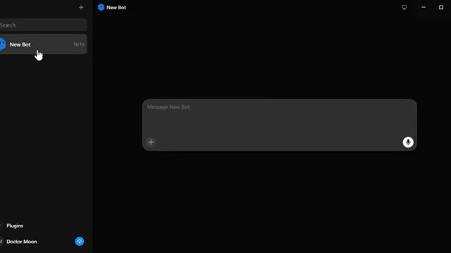
🔍 AgrandirUn agent de portefeuille. Avec ce bot, vous pouvez le connecter à votre échange, qu'il s'agisse de votre tableur avec des interrogations d'API en direct ou d'une connexion de lecture directe à votre compte. Et chaque matin, il vous donne un récapitulatif de la nuit. Qu'est-ce qui a bougé ? Qu'y a-t-il au calendrier aujourd'hui ? Et si quelque chose dans vos positions nécessite de l'attention.
Interface & Outils : Application de messagerie de type chatbot / assistant IA avec paramètres de configuration.
Contenu textuel & Code : Description de l'agent ("Connect this bot to your exchange account or live API spreadsheet to get an automated morning report..."), historique des conversations et paramètres.
Action / Démonstration : Présentation de l'interface et des fonctionnalités de configuration de l'agent de portefeuille automatisé.
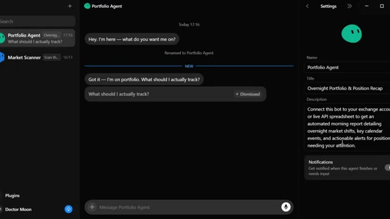
🔍 AgrandirUn agent de recherche que vous pouvez configurer pour analyser les actualités crypto et X toutes les quelques heures et compiler uniquement ce qui est réellement pertinent pour les pièces que vous détenez ou surveillez. Quatrième étape, sous les plugins, vous pouvez le connecter à Google Sheets, Gmail, Slack et d'autres outils. De la même manière que vous connectez un MCP dans Claude.
Interface & Outils : Application de chat et de gestion d'agents IA (Interface personnalisée avec panneau de configuration et plugins).
Contenu textuel & Code : Paramètres de l'agent de recherche (« Research Agent », « Automated Crypto News & X Intelligence ») et liste des plugins disponibles (« AWS Agents », « Docs Canvas », « Intercom », etc.).
Action / Démonstration : Configuration des paramètres de l'agent de recherche et exploration du catalogue de plugins.
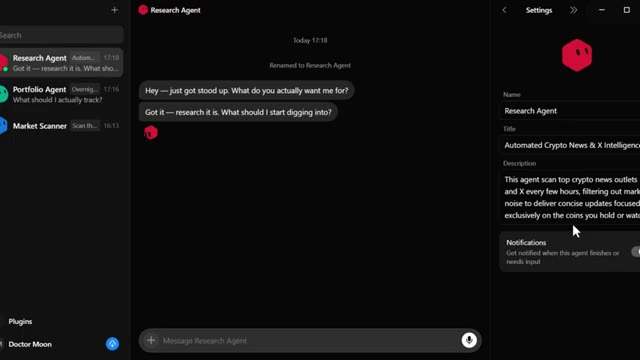
🔍 Agrandir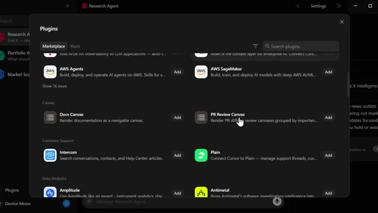
🔍 AgrandirC'est là que ça devient puissant pour le trading en particulier, car vous pouvez littéralement lui donner un accès en lecture à vos données d'échange et lui demander de vous faire un rapport comme le ferait un analyste. Remarque importante, et je le dis à chaque fois que je parle d'automatisation et d'argent, lorsqu'il s'agit de l'exécution réelle des transactions, soyez beaucoup plus prudent. Le reporting et l'analyse, aucun problème.
Interface & Outils : Interface logicielle d'agent conversationnel IA (Marketplace et panneau de configuration Market Scanner).
Contenu textuel & Code : Catalogue de plugins (Amplitude, Apify, Antimetal, Astronomer, Mobbin, Docusign) et configuration d'un agent automatisé de scan de marché.
Action / Démonstration : Navigation et présentation des extensions et des paramètres d'un agent de trading automatisé.
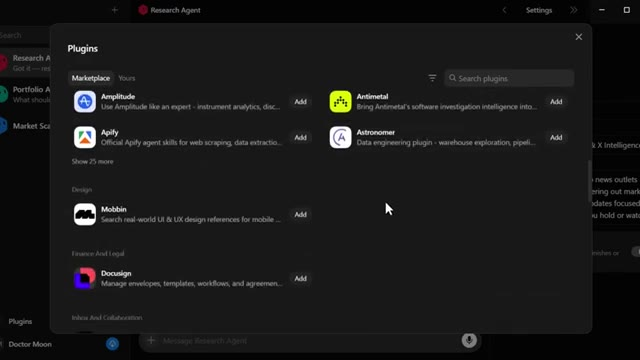
🔍 Agrandir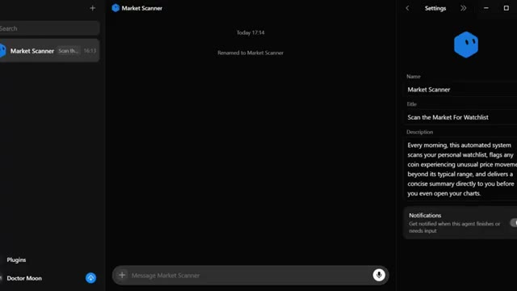
🔍 Agrandirlui permettre de passer de vrais trades en votre nom est une autre discussion et quelque chose que vous devez vérifier sérieusement avant de le connecter, maintenant laissez-moi vous montrer exactement comment j'utiliserais ceci pour le trading et l'investissement parce que c'est là que ça devient réellement utile et pas seulement un jouet cool : un récapitulatif du marché nocturne, au lieu de vous réveiller et de faire défiler 15 onglets, vous ouvrez un seul chat et il vous dit ce que Bitcoin et Ethereum ont fait pendant la nuit, s'il y a eu des chasses à la liquidité et si les cryptos de votre liste de surveillance ont déclenché des alertes.
Interface & Outils : Interface de type messagerie/agent IA personnalisable (style application de bureau ou web app) avec panneau latéral de gestion des agents et des conversations.
Contenu textuel & Code : Textes de configuration d'agents IA ("Research Agent" et "Market Scanner") incluant des descriptions de tâches automatisées pour l'analyse des actualités crypto, le suivi des prix (Bitcoin, Ethereum) et la détection d'événements de marché.
Action / Démonstration : Présentation de la configuration et des cas d'usage pratiques de différents agents IA dédiés au trading et à l'investissement en cryptomonnaies.
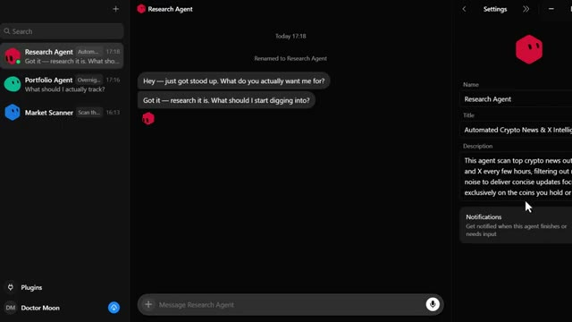
🔍 Agrandir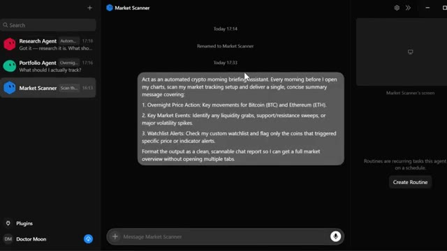
🔍 AgrandirDeux, des rappels pour le rééquilibrage de portefeuille. Si vous êtes comme beaucoup de traders qui oublient de rééquilibrer, vous pouvez littéralement dire : signalez-moi si une position s'écarte de plus de 10 % de l'allocation cible, et cela vous dira exactement quand et de combien. Trois, la recherche de valeurs aberrantes. De la même manière que j'utilise ce concept sur ma chaîne d'analyse technique.
Interface & Outils : Interface de chat avec un assistant IA spécialisé dans la gestion de portefeuille (Portfolio Agent).
Contenu textuel & Code : Prompt détaillé de l'utilisateur pour le suivi des allocations, l'identification des déviations de plus de 10 % et la génération d'alertes actionnables.
Action / Démonstration : Configuration d'un agent IA pour le suivi automatisé et le rééquilibrage du portefeuille de trading.
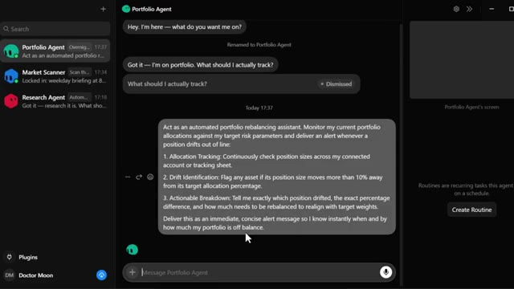
🔍 Agrandir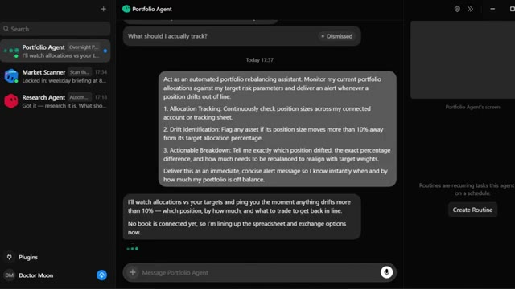
🔍 AgrandirVous pouvez le faire scanner pour détecter des pièces, montrant un volume inhabituel ou brisant une structure clé. Ainsi, vous ne vérifiez pas manuellement les graphiques toute la journée. Quatrièmement, le parrainage et la recherche de projets. Si vous gérez une page ou une chaîne crypto comme je le fais, vous pouvez littéralement lui faire scanner quels projets dépensent le plus en publicité en ce moment.
Interface & Outils : Application de type agent conversationnel et d'automatisation (interface sombre avec panneau latéral pour les agents Market Scanner, Research Agent, Portfolio Agent).
Contenu textuel & Code : Prompts de configuration d'un agent de scan technique (détection de pics de volume, ruptures de structure de marché BOS/CHoCH) et liste de prospects publicitaires crypto (Polymarket, Toobit, MEXC, Kraken).
Action / Démonstration : Navigation et démonstration des routines automatisées configurées pour le scan des marchés et la recherche de sponsors.
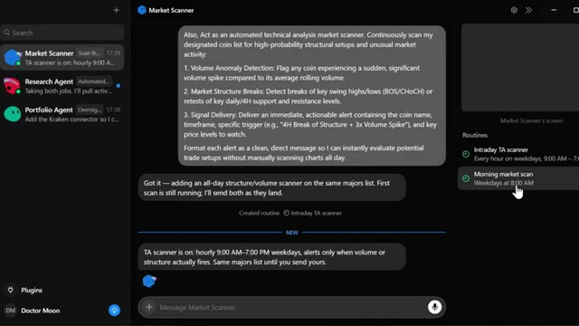
🔍 Agrandir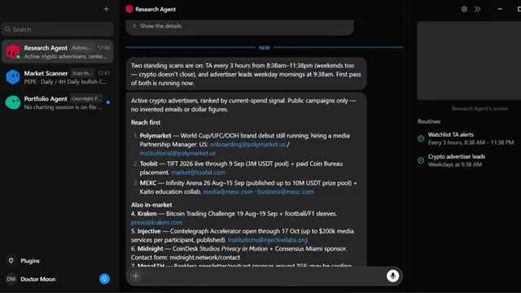
🔍 AgrandirDonc vous savez qui contacter. Cinq, la formation à l'apprentissage et aux flux de travail. Vous pouvez vous enregistrer en train de faire votre propre processus d'analyse technique et il va réellement apprendre à en répliquer des parties pour vous avec le temps. Mais voici le point. GrokBot n'est pas seulement conçu pour le trading de crypto. Si vous avez d'autres tâches pour gérer votre entreprise ou votre vie, GrokBot peut aussi s'en charger. Vous pouvez le configurer pour les ventes, la prospection, la recherche de talents, la gestion des médias payants, la gestion des dépenses, le suivi des performances des produits, la reproduction de bugs, la surveillance de la santé des comptes, et même un chef complet
Interface & Outils : Application de chat type agent IA (Portfolio Agent) et site web promotionnel de Grok Bot.
Contenu textuel & Code : Prompt utilisateur structuré en trois étapes (Process Extraction, Rule Codification, Strategy Replication) pour analyser des sessions de trading et automatiser une stratégie.
Action / Démonstration : Configuration et démonstration d'un prompt d'apprentissage d'analyse technique et sélection de rôles de bots sur une interface web.
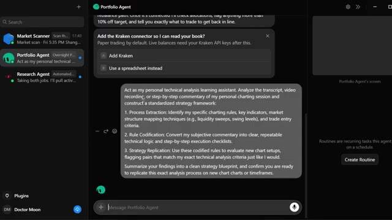
🔍 Agrandir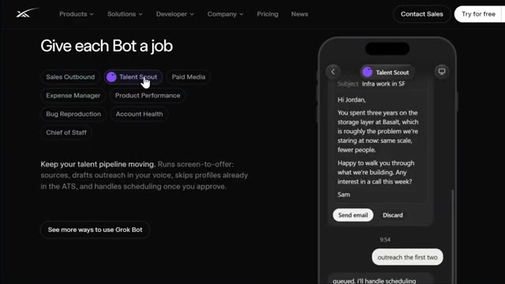
🔍 Agrandirde rôle. GrokBot peut vraiment tout faire. Les cas d'usage crypto, c'est juste là-dessus que je me penche en ce moment parce que c'est ce qui est pertinent pour vous et moi. Bon, parlons des prix, parce que je sais que c'est là-dessus que beaucoup d'entre vous vont avoir des avis. Cursor Ultra coûte 200 dollars par mois, facturé mensuellement, cela inclut le propre ordinateur de GrokBot, il se connecte à vos outils, exécute des routines selon un calendrier, fonctionne partout sur ordinateur, mobile et plus encore, et vous donne des limites étendues sur les jetons. Supergirl Heavy coûte 300 dollars par mois, facturé mensuellement, et cela comprend tout ce qu'il y a dans Supergirl plus le niveau le plus
Interface & Outils : Navigateur web affichant la page officielle du produit Grok Bot et sa grille tarifaire.
Contenu textuel & Code : Tarifs des abonnements : Cursor Ultra ($200/month), SuperGrok Heavy ($300/month) et Cursor Premium Teams ($120/seat/month) ainsi que la liste de leurs fonctionnalités respectives.
Action / Démonstration : Navigation sur la page de tarification des services d'intelligence artificielle pour illustrer les coûts présentés dans la vidéo.
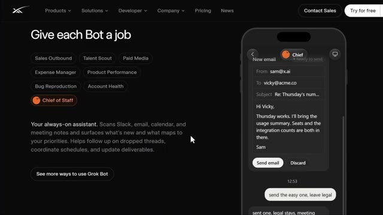
🔍 Agrandir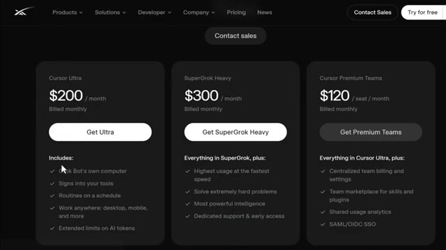
🔍 Agrandirl'utilisation à la vitesse la plus rapide, la capacité à résoudre des problèmes extrêmement difficiles, l'intelligence la plus puissante et un support dédié en accès anticipé. Cursor Premium Teams coûte 120 dollars par utilisateur et par mois, facturé mensuellement, et cela comprend tout ce qu'il y a dans Cursor Ultra, plus la facturation et les paramètres d'équipe centralisés, un marché d'équipe pour les compétences et les plugins, des analyses d'utilisation partagées et SAML ou O-I-D-C-S-S-O. Maintenant, comparez ce prix à d'autres modèles comme ChatGPT, Google Gemini et Claude d'Anthropic. ChatGPT Plus coûte 20 dollars par mois.
Interface & Outils : Page web de tarification (Pricing) avec des cartes d'abonnements.
Contenu textuel & Code : Tarifs des abonnements : Cursor Ultra ($200/month), SuperGrok Heavy ($300/month) et Cursor Premium Teams ($120/seat/month) avec le détail des fonctionnalités incluses pour chaque offre.
Action / Démonstration : Présentation des différentes offres d'abonnement et de leurs tarifs respectifs.
ce qui vous donne l'expérience standard à laquelle la plupart des gens sont habitués. Mais si vous voulez leur modèle de raisonnement haut de gamme, ChatGPT Pro coûte 200 dollars par mois. Donc, rien que là, vous payez la même chose que pour le niveau supérieur de GrokBot, mais vous obtenez toujours juste une conversation, et non un agent toujours actif doté de son propre ordinateur. Gemini est similaire. Google AI Pro, qui s'appelait auparavant Gemini Advanced, coûte 19,99 dollars par mois pour le niveau standard. Mais si vous voulez leur niveau ultra avec le plus de capacités, cela passe à 99,99 dollars par mois, et il y a un niveau encore plus élevé à 199,99 dollars par mois. Encore une fois,
Interface & Outils : Navigateur web affichant des pages web de comparaison d'abonnements et de tarifs d'IA.
Contenu textuel & Code : Tarifs d'abonnement pour ChatGPT/Gemini (Pro à 100$, Pro à 200$, Google AI Ultra à 99.99$/mois) et descriptifs des limites d'utilisation.
Action / Démonstration : Comparaison des coûts et des niveaux de service des différents abonnements d'intelligence artificielle.
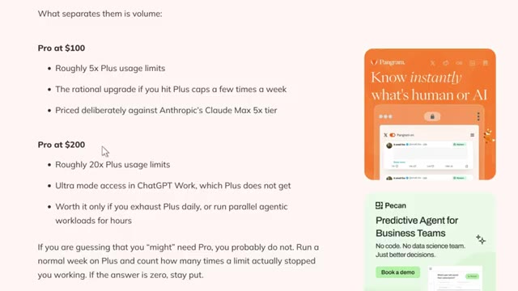
🔍 Agrandir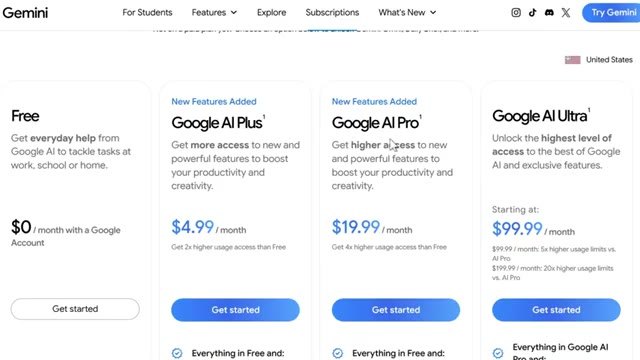
🔍 Agrandirc'est de l'argent réel pour un modèle qui ne fonctionne encore que lorsque vous le sollicitez activement. Et Claude, le maximum cinq fois coûte 100 dollars par mois et le maximum 20 fois, leur niveau le plus élevé est à 200 dollars par mois. Vous payez donc le prix de GrokBot pour l'intelligence de Claude, sauf qu'il faut encore le surveiller, ouvrir le chat et entretenir la conversation vous-même. Donc, quand on met tout bout à bout, 20 à 300 dollars pour ChatGPT, 20 à 200 dollars pour Gemini, 100 à 200 dollars pour Claude, vous dépensez déjà de l'argent réel pour les niveaux supérieurs de n'importe lequel d'entre eux. La différence avec GrokBot à cette même fourchette de prix de 200 à 300 dollars
Interface & Outils : Navigateur web affichant le site officiel et le blog de tarification de Claude (Anthropic).
Contenu textuel & Code : Tarifs des abonnements Claude : plan Pro à 17-20 $/mois, Max 5x à 100 $/mois, et Max 20x à 200 $/mois.
Action / Démonstration : Présentation des grilles tarifaires et comparaison des différents niveaux d'abonnement et de leurs multiplicateurs d'utilisation.
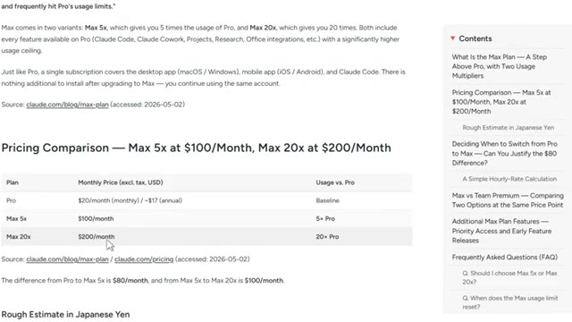
🔍 Agrandir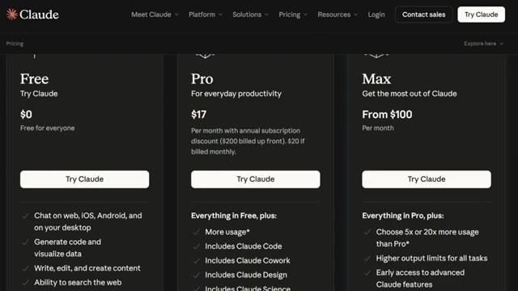
🔍 Agrandirc'est que vous ne payez pas pour une conversation plus intelligente. Vous payez pour quelque chose qui fonctionne 24 heures sur 24 et 7 jours sur 7 sans vous. Écoutez, 200 dollars, c'est beaucoup, et je ne vais pas faire semblant que ce n'est pas le cas. Ce n'est pas pour quelqu'un qui se contente de mettre un orteil dans la crypto avec un abonnement de 20 dollars. C'est pour les personnes qui dépensent déjà de l'argent réel en crédits d'API ou en plusieurs abonnements à des IA et qui veulent que ce soit regroupé en un seul système toujours actif. Si ce n'est pas encore votre cas, c'est tout à fait correct. Vous pouvez tirer une énorme valeur des outils gratuits et continuer à trader intelligemment. Maintenant, avant de conclure, laissez-moi passer rapidement en revue un
Interface & Outils : Page web de tarification et d'abonnement (Grok Bot / Cursor) avec interface utilisateur sombre.
Contenu textuel & Code : Offres tarifaires : Cursor Ultra ($200/mois), SuperGrok Heavy ($300/mois), Cursor Premium Teams ($120/siège/mois), et essai gratuit d'une semaine.
Action / Démonstration : Présentation des grilles tarifaires et des fonctionnalités associées aux abonnements haut de gamme pour l'automatisation et les outils d'IA.
FAQ parce que je sais que beaucoup d'entre vous vont avoir exactement ces questions dans les commentaires. En quoi GrokBot est-il différent des assistants IA ? Les bots ont leur propre ordinateur, donc ils peuvent travailler au sein de vos applications et de vos outils. Ils fonctionnent également en parallèle, 24h/24 et 7j/7, même lorsque votre ordinateur portable est fermé. Pour qui GrokBot est-il disponible aujourd'hui ? GrokBot est accessible dès aujourd'hui pour les abonnés de Cursor Ultra, Super Grok Heavy et Cursor Premium Team.
Interface & Outils : Site web officiel de présentation de Grok Bot.
Contenu textuel & Code : Texte de la FAQ expliquant la différence entre Grok Bot et les assistants IA ('Bots have their own computer...').
Action / Démonstration : Présentation visuelle de la foire aux questions pour appuyer les explications audio.
Est-ce que GrokBot est disponible pour les entreprises ? Bientôt. Nous prévoyons d'ouvrir GrokBot aux équipes et aux entreprises dans les semaines à venir. Pour l'instant, vous pouvez vous inscrire sur la liste d'attente. Je mettrai le lien ci-dessous. Où est-ce que je peux parler à GrokBot ? Travaillez avec GrokBot depuis votre bureau, sur macOS ou Windows, ou depuis votre téléphone avec l'application iOS. Est-ce que les bots partagent un seul ordinateur ? Oui. Chaque GrokBot partage un seul ordinateur virtuel persistant dans le cloud.
Interface & Outils : Navigateur web affichant une page de FAQ officielle.
Contenu textuel & Code : Texte de la FAQ concernant Grok Bot : "Is Grok Bot available for enterprises?", réponse "Soon. We expect to open Grok Bot to teams and enterprises in the coming weeks. For now, you can join our waitlist here."
Action / Démonstration : Navigation et affichage des réponses de la FAQ concernant les options et la disponibilité de Grok Bot.
Vos bots partagent cette machine, ces fichiers, ce navigateur, ces identifiants, afin de pouvoir se transmettre le travail et conserver le contexte. L'isolation se fait par utilisateur, et non par GrokBot. Comment GrokBot traite-t-il mes données et ma confidentialité ? GrokBot utilise le même SSO de Cursor, la même authentification et le même mode de confidentialité en qui vous avez déjà confiance. Votre ordinateur cloud est chiffré en transit et au repos, avec une option de désactivation de l'entraînement.
Interface & Outils : Site web officiel / Page FAQ de Grok Bot.
Contenu textuel & Code : Texte affiché : « Do Bots share one computer? Yes. Every Grok Bot shares one persistent cloud computer. Your Bots share that machine (files, browser, logins), so they can hand work off and keep context. Isolation is per user, not per Grok Bot. »
Action / Démonstration : Le présentateur survole ou zoome sur la FAQ du site de Grok Bot pour illustrer le fonctionnement technique et la gestion de l'isolation des données entre utilisateurs.
Les actions sensibles peuvent passer par une révision automatique avant d'être exécutées. Les administrateurs d'entreprise peuvent configurer la prévention des pertes de données, les règles d'information de sécurité, les proxys et les contrôles réseau au démarrage. Très bien, et regardez, pour les quelques années à venir, deux types de traders existeront. Ceux qui utilisent l'intelligence artificielle et ceux qui font encore tout manuellement. Même marché, des résultats très différents.
Interface & Outils : Page web FAQ et interface du réseau social X.
Contenu textuel & Code : Texte de la FAQ concernant la confidentialité des données, l'authentification et les contrôles administrateur (DLP, proxys).
Action / Démonstration : Navigation sur la page web présentant les spécifications de sécurité du bot.
Voici comment vous vous mettez du bon côté de cela. J'ai rassemblé tout ce qui se trouve au sein de la communauté AI Trade Edge. Chaque prompt, chaque bot, chaque modèle, chaque guide étape par étape que j'utilise personnellement, le tout au même endroit. Et tout ce que je construirai à l'avenir sera ajouté directement dans le groupe dès sa sortie.
Interface & Outils : Navigateur web affichant la plateforme de formation et d'outils d'Alex Carter (Whop et site de documentation interne).
Contenu textuel & Code : Liste des fonctionnalités des outils d'IA incluant la lecture de graphiques, l'extraction de données OHLCV, la lecture d'indicateurs (RSI, MACD, EMA, Bollinger Bands) et le contrôle de TradingView.
Action / Démonstration : Présentation des ressources de la communauté et des guides d'utilisation des outils d'IA pour le trading.
Nous testons également des stratégies provenant de tout l'internet, en les automatisant à l'aide de PineScript, en les exécutant en direct et en partageant exactement ce qui fonctionne et ce qui ne fonctionne pas. Vous n'obtenez donc pas seulement des outils. Vous obtenez une opération de recherche en direct. À l'intérieur, il y a aussi un cours complet de trading agentique de 2 heures et demie, du débutant à l'expert, sans aucune base en codage nécessaire. À la fin, vous aurez votre propre système de trading IA fonctionnant en direct, quelque chose que la plupart des traders particuliers ne savent même pas être possible en ce moment. 79,99 dollars par mois, un bon trade couvre ce montant et les 100 premiers membres bloquent ce tarif de façon permanente.
Interface & Outils : Graphique de trading TradingView intégré à une plateforme de courtage et page Web de formation en ligne.
Contenu textuel & Code : Graphique en chandeliers japonais, indicateur technique STC Combo en bas, signaux de trading visuels (BUY, SELL) et structure de cours en ligne. [DESC_IMAGE_2] Affichage d'un graphique financier avec indicateurs techniques suivi d'une transition vers une interface de présentation de cours de trading en ligne.
Action / Démonstration : Présentation d'une stratégie de trading automatisée et de la plateforme pédagogique associée.
après cela, le prix augmente. Le lien est dans la description. Vous ne pouvez vraiment pas vous permettre de rater ça. C'est donc GrokBot. Ce que c'est, pourquoi je pense qu'il surpasse actuellement les alternatives pour un travail continu, exactement comment le configurer, et comment vous pouvez le pointer directement vers votre trading et vos investissements en crypto. Je vais continuer à tester cela au cours des prochaines semaines et voir comment il résiste aux conditions réelles du marché. Assurez-vous donc d'être abonné et d'avoir activé les notifications car je partagerai des mises à jour au fur et à mesure et si vous voulez le guide étape par étape complet sur la façon de construire votre propre système de trading agentique en utilisant Claude, cette vidéo apparaît
Interface & Outils : Application de type interface de chat avec des agents IA (GrokBot ou similaire), barre latérale de gestion des agents et panneau de routines.
Contenu textuel & Code : Analyses de marché automatisées, rapports de rupture de structure (BOS), changements de caractère (ChoCh), pics de volume et configurations de prompts pour agents de trading.
Action / Démonstration : Démonstration de l'utilisation de GrokBot comme scanner de marché technique automatisé et outil de recherche crypto.
à l'écran également allez voir ça ensuite si vous avez trouvé cela utile laissez un pouce bleu cela aide vraiment la chaîne abonnez-vous si ce n'est pas déjà fait et je vous vois dans la prochaine
Interface & Outils : Aucune
Contenu textuel & Code : Aucun
Action / Démonstration : Aucune